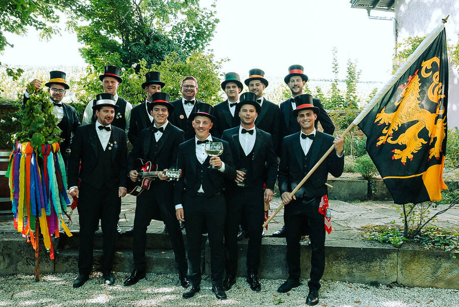
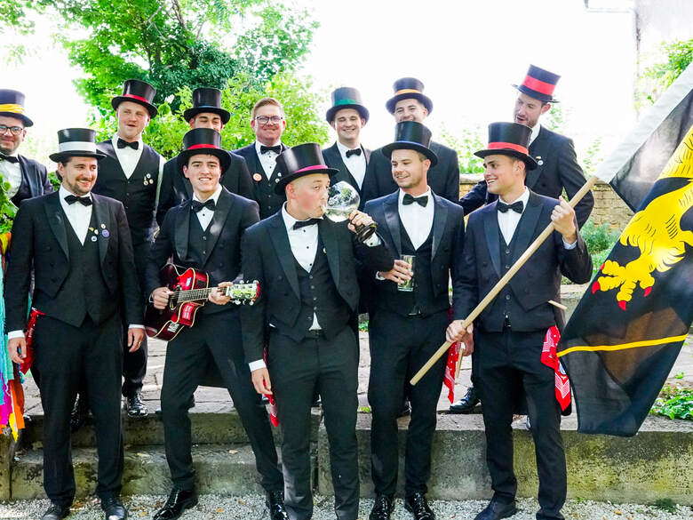
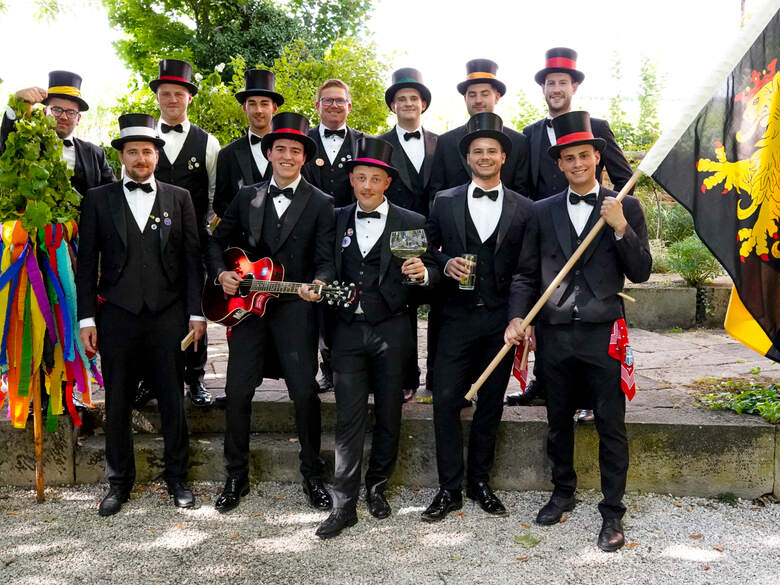
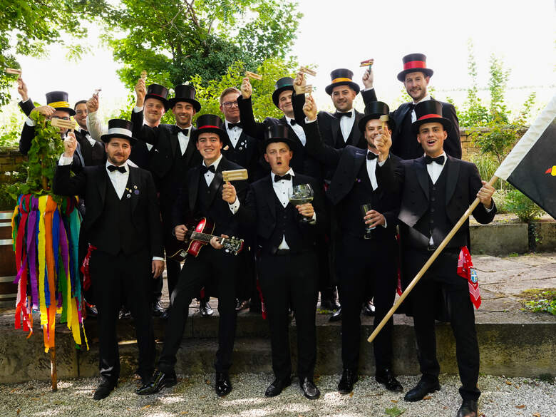
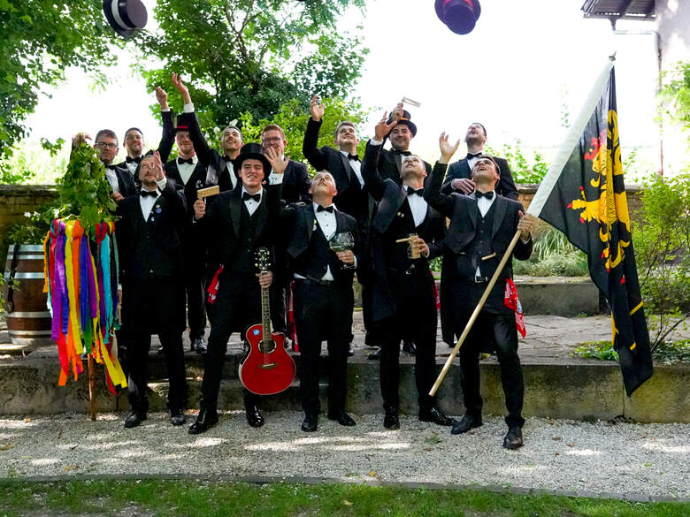
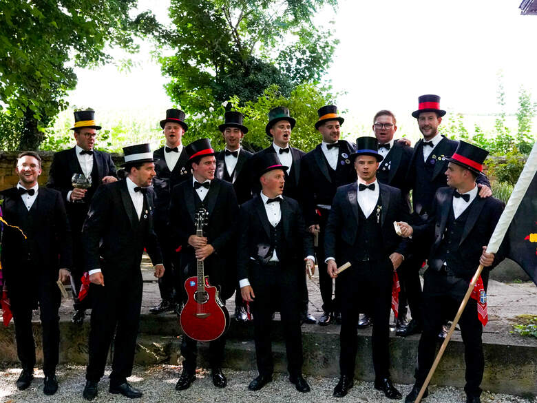
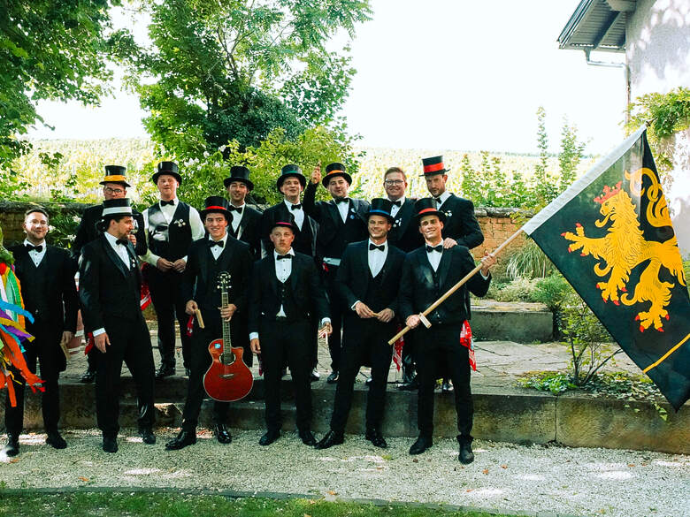

Die Deidesheimer Kerwebuwe sind eine Gemeinschaft Deidesheimer Junggesellen, die seit 1972 die Weinkerwe ihrer Heimatstadt mit Leben füllen – ein Brauch, der von Jahrgang zu Jahrgang weitergegeben wird.
Jeder Aspirant läuft ein Jahr in der Küferbluse mit uns mit. In dieser Zeit wächst er in die Gemeinschaft hinein, ehe er fest aufgenommen wird – so reiht sich Jahrgang an Jahrgang, vom ersten Bu bis heute.

„Kerwe“ ist das pfälzische Wort für Kirchweih. Was einst als Markt begann, ist heute unser Fest – und seit 1972 unsere Aufgabe.
Der Fürstbischof gewährt Deidesheim einen jährlichen Jahrmarkt – die Wurzel unserer Kerwe.
Aus dem alten Herbstmarkt wird ein Sommerfest im August ins Leben gerufen.
Erstmals trägt das Fest den Namen, den es bis heute hat: die Weinkerwe.
Die Weinkerwe wird gefeiert wie heute – mitten in den Höfen. Im selben Jahr gründen sich die Deidesheimer Kerwebuwe.
Seit diesem Jahr wird zur Kerwe jährlich eine Weinprinzessin gekrönt.
Von Willi Leim bis heute tragen wir das Brauchtum Jahrgang für Jahrgang weiter.
Jahr für Jahr halten wir zur Kerweeröffnung die Kerwerede. Hier bewahren wir sie.
Tippt auf ein blaues Jahr – die Rede öffnet sich direkt, samt Original als PDF zum Ansehen und Herunterladen. Fehlende Jahrgänge ergänze ich, sobald ihr sie mir gebt.






Von Nr. 1 bis heute – jeder Bu in der Reihenfolge, in der er dazukam, mit seinen Jahren bei uns.
75 Buwe seit 1972 · „Kerwe“ = Anzahl der mitgefeierten Weinkerwen.
Fragen, mitmachen oder einfach Hallo sagen? Meldet euch bei uns.
E-Mail: deidesheimerkerwebuwe@gmx.de
Ort: 67146 Deidesheim, Pfalz
@deidesheimer_kerwebuweAngaben gemäß § 5 TMG
Deidesheimer Kerwebuwe
Junggesellenschaft · nicht eingetragener Verein
Vertreten durch: [Vorstand / Vertretungsberechtigter]
[Straße & Hausnummer]
67146 Deidesheim
E-Mail: deidesheimerkerwebuwe@gmx.de
Datenschutz. Diese Seite erhebt keine personenbezogenen Daten über das notwendige Maß hinaus. Die vollständige Datenschutzerklärung folgt zur Veröffentlichung.
Platzhalter – bitte echte Impressums-Angaben ergänzen (Pflichtangabe).
Für dieses Jahr ist noch kein Text hinterlegt. Schickt mir die Rede – dann steht sie hier, Strophe für Strophe.